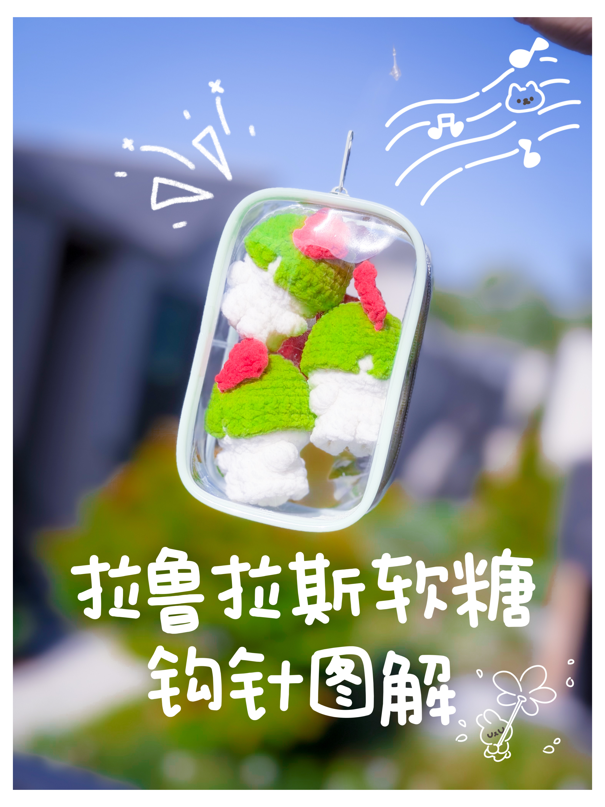

Puffy Kitty Crochet Pattern
拉鲁拉丝软糖
拉鲁拉丝软糖图解，包含身体1和身体2两个主体版本，以及共用的头发和红色触角。
Ralts gummy pattern with Body 1 and Body 2 versions plus shared hair and red horns.

打开交互式图解 / Open interactive pattern
主体图解
| 轮数 | 中文 | US | UK |
|---|
记号
x = 短针，v = 加针，A = 减针，B = 泡泡针，ch = 锁针，SL = 引拔针，T = 中长针，F = 长针。